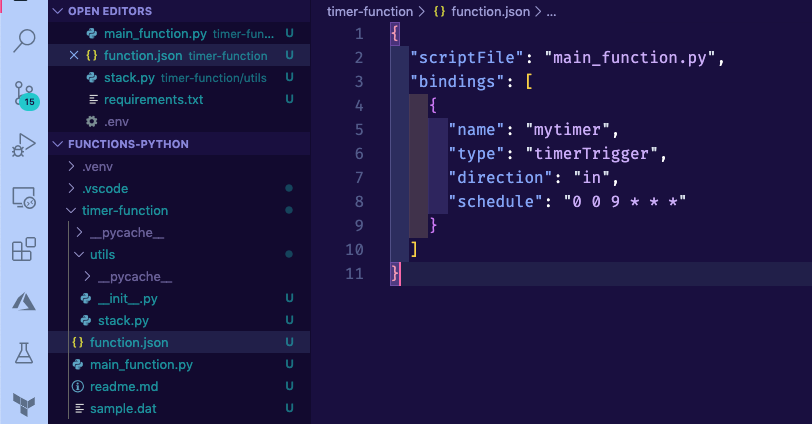
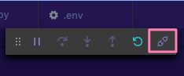
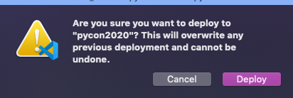
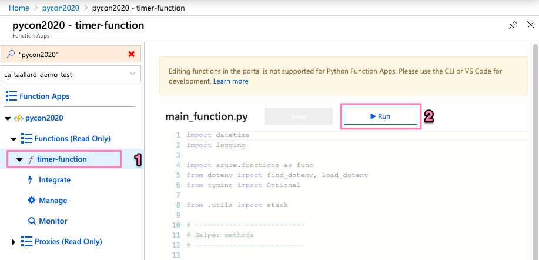

Data acquisition with functions¶
Data acquisition with functions¶
We already have a working and deployed function, but so far it is not doing anything exciting.
Let’s start working on the data processing part of the function.
Tip
The repository containing all the scripts and solutions to this tutorial can be found at https://github.com/trallard/pycon2020-azure-functions.
The details¶
To demonstrate the capabilities of Azure functions for data processing scenarios, we will build the following pipeline:
Collect data from the StackExchange API using the timer trigger. We will focus on extracting questions from StackOverflow within a time range and with specific tags.
Store the raw data in our Azure storage account.
Trigger the processing function that cleans the data and leaves it in a usable format.
Let’s get started!
Connecting to the StackExchange API¶
1. Create necessary files and dirs¶
In the Your first Azure function section we created a basic timer function and explored the generated files.
To keep things neat we are going to create a utils folder as well and __init__.py and stack.py file in it. From the command line (bash):
mkdir -p <your-function-dir>/utils
touch <your-function-dir>/utils/__init__.py
touch <your-function-dir>/utils/stack.py
2. Add methods¶
Now that we have the necessary files we have to update utils/stack.py to handle the requests to the StackExchange API:
import datetime
import json
import logging
import os
from dataclasses import dataclass
from json import JSONDecodeError
from typing import Optional
import requests
@dataclass
class se_object:
"""Class to deal with StackExchage data collection and manipulation.
"""
search_terms: list
main_uri: str = "https://api.stackexchange.com/2.2/questions"
def __repr__(self) -> str:
return f"<Object for site {self.main_uri}>"
def get_questions(self, n=100) -> Optional[list]:
"""Collect questions from SE and returns a list
Args:
n (int, optional): Number of questions to collect from the last 24 hours. Defaults to 100.
"""
# note that this needs to be in epoch
time_now = datetime.datetime.now(datetime.timezone.utc)
start_time = time_now - datetime.timedelta(hours=24)
payload = {
"fromdate": int(start_time.timestamp()),
"todate": int(time_now.timestamp()),
"site": "stackoverflow",
"sort": "votes",
"order": "desc",
"tagged": self.search_terms,
"client_id": os.environ.get("SE_client_id"),
"client_secret": os.environ.get("SE_client_secret"),
"key": os.environ.get("SE_key", None),
}
if os.environ.get("SE_key", None) is None:
logging.info("No StackExchange API key provided, limited use may apply")
resp = requests.get(self.main_uri, payload)
if resp.status_code == 200:
try:
new_questions = [q for q in resp.json().get("items", [])]
logging.info(
f"🐍 Collected {len(new_questions)} new questions for the search term"
)
return new_questions
except (JSONDecodeError, KeyError) as e:
logging.error(f"{e.__class__.__name__}: {e}")
else:
error = resp.json()["error_message"]
logging.error(
f"(Unable to connect to Stack Exchage: status code {resp.status_code} - {error}"
)
Note how we use the trigger time to set the todate and fromdate in the StackExchange query.
So we need to modify the main script for our function too:
import datetime
import logging
import azure.functions as func
from dotenv import find_dotenv, load_dotenv
from typing import Optional
from .utils import stack
# --------------------------
# Helper methods
# --------------------------
def get_vars() -> Optional[bool]:
"""Collect the needed keys to call the APIs and access storage accounts.
Returns:
bool: Optional - if dotenv file is present then this is loaded, else the
vars are used directly from the system env
"""
try:
dotenv_path = find_dotenv(".env")
logging.info("Dotenv located, loading vars from local instance")
return load_dotenv(dotenv_path)
except:
logging.info("Loading directly from the system")
# -----------------------------------------
# Main method - executed by the function
# -----------------------------------------
def main(mytimer: func.TimerRequest) -> None:
"""Main function to collect questions from stackexchange.
Note that right now the site is harcoded to "StackOverflow" but this
can be changed in stack.py
Args:
mytimer (func.TimerRequest): Timer trigger for the function, for more
details check function.json
"""
# collect timestamp for the function that is being called
utc_timestamp = (
datetime.datetime.utcnow().replace(tzinfo=datetime.timezone.utc).isoformat()
)
logging.info(f"Function executing at {utc_timestamp}")
get_vars()
# as many search terms as wanted - must be a list
stackexchange = stack.se_object(["python", "azure-functions"])
se_questions = stackexchange.get_questions(n=20)
if __name__ == "__main__":
# set logging format - personal preference
log_fmt = "%(asctime)s - %(name)s - %(levelname)s - %(message)s"
logging.basicConfig(level=logging.INFO, format=log_fmt)
main()
3. Tidying and finishing off¶
To make it easier to identify files we will rename the function script to
main_function.py:
Warning
You also need to change the name of the scriptFile in the function.json file. Otherwise, your function is not able to locate the file.
Since we are using requests and python-dotenv we need to update the
requirements.txtfile:
azure-functions
python-dotenv==0.13.0
requests==2.23.0
Finally, we need to create a
.envfile to store API keys and other environment variables for local development and debugging.
# Stackexchange
SE_client_id = <your secret>
SE_client_secret = <your secret>
SE_key = <your secret>
Warning
Do not commit this .env file to version control. We will learn later on the tutorial how to securely add variables to your Azure functions.
4. Debugging and executing locally¶
Start the debugging session in VS Code by pressing F5. You should see the function output in the integrated terminal.
Click on the Azure extension on the VS Code sidebar and then expand the Functions section.
Right-click on your function name (timer-function) and click on Execute function now.

If everything was correctly updated, then you should see the function output in the VS code integrated terminal.
[15/04/2020 14:03:34] Executing 'Functions.timer-function' (Reason='This function was programmatically called via the host APIs.', Id=d900f28c-10e5-4e40-8de1-a17079674139)
[15/04/2020 14:03:34] INFO: Received FunctionInvocationRequest, request ID: 4bab6cbc-a5eb-4ce9-9cb5-4580ca431de3, function ID: c8491e7b-4c49-4546-9a0a-5a07ba7e2020, invocation ID: d900f28c-10e5-4e40-8de1-a17079674139
[15/04/2020 14:03:34] Function executing at 2020-04-15T14:03:34.755770+00:00
[15/04/2020 14:03:34] Dotenv located, loading vars from local instance
[15/04/2020 14:03:35] 🐍 Collected 30 new questions for the search term
[15/04/2020 14:03:35] INFO: Successfully processed FunctionInvocationRequest, request ID: 4bab6cbc-a5eb-4ce9-9cb5-4580ca431de3, function ID: c8491e7b-4c49-4546-9a0a-5a07ba7e2020, invocation ID: d900f28c-10e5-4e40-8de1-a17079674139
[15/04/2020 14:03:35] Executed 'Functions.timer-function' (Succeeded, Id=d900f28c-10e5-4e40-8de1-a17079674139)
5. Deploying your updated function¶
First, make sure to stop the localhost. You can do this either pressing the Ctrl + C keys or clicking on the disconnect button from the debugging bar:
To deploy your updated function:
Click on the Azure extension on the VS Code sidebar and then click on the deploy to function app on the Azure functions section.
Select the name of the app that you used before (since we want to update the existing instance).
Head over to portal.azure.com and follow the same instructions as in Using the Azure portal to get to your function main page:

4. Click on Configuration and in the following screen click on + New application setting (1 in the image) to add the keys you stored in your local .env file.
Add one by one as a separate value-pair (should look like 2 in image).

Once completed, click on the Save button on the top bar (3 in image above).
Execute your function on the cloud: go back to your function main page in portal.azure.com. Then click on the name of your function (1 in the image below) and then on the Run button on the top right (2 in image).

You can now head to the monitor section of your function and see the logs and status of the run you just started.
 Additional resources and docs
Additional resources and docs